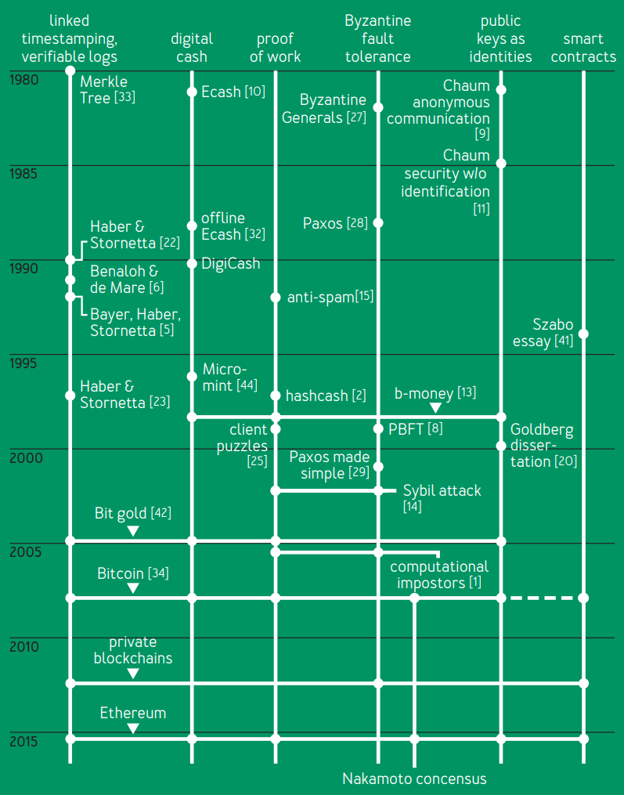
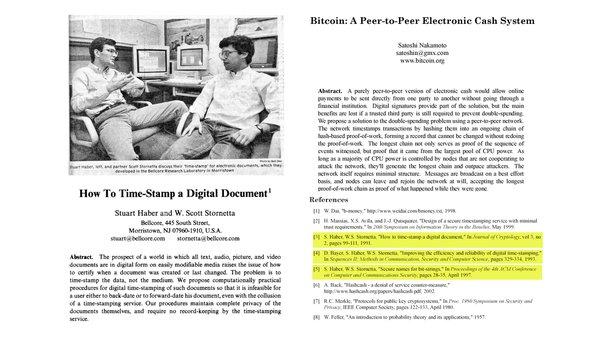
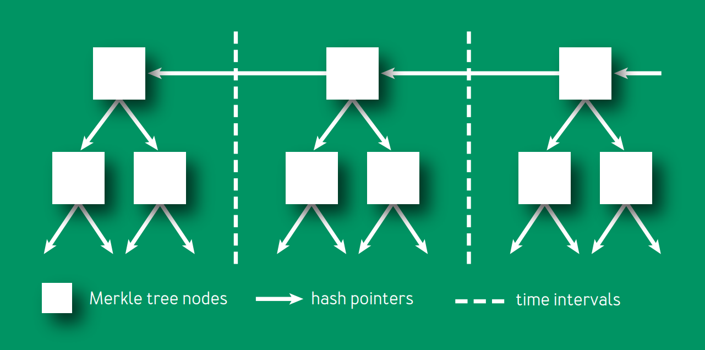

<!DOCTYPE html>
<html lang="en">

<head>
    <meta charset="UTF-8">
    <meta http-equiv="X-UA-Compatible" content="IE=edge">
    <meta name="viewport" content="width=device-width, initial-scale=1.0">
    <meta name="description"
        content="Blockchain is the new internet for the generation Beta, The word internet will be long gone and the way Blockchain is going to make changes in upcoming years will change the digital realm completely">
    <link rel="stylesheet" href="style.css">
    <link rel="shortcut icon" href="favicon.png" type="image/png">
    <title>The Internet of Gen Beta - Blockchain</title>
</head>

<body class="bodyhtml">
    <!-- <button class="absolute">Do not click</button> -->
    <header>
        <nav class="navigation">
            
            
            <ul>
                <li><a href="index.html">HOME</a></li>
                <li><a href="past.html">TECHNICAL COMPONENTS OF PAST</a></li>
                <li><a href="present.html">BLOCKCHAIN PRESENT</a></li>
                <li><a href="future.html">INTERNET FOR GEN BETA</a></li>
                <li><a href="about.html">ABOUT</a></li>
                <li><a href="contact.html">CONTACT</a></li>
            </ul>
        </nav>
    </header>
    <main>
        <section class="sectionpast">
            <div class="content">
                <h3>The concept of
                    cryptocurrencies
                    is built from
                    forgotten ideas
                    in research literature</h3>
                <p>

                    If you’ve read about bitcoin in the press and have some
                    familiarity with academic research in the field of
                    cryptography, you might reasonably come away with
                    the following impression: Several decades’ worth
                    of research on digital cash, beginning with David
                    Chaum,10,12 did not lead to commercial success because
                    it required a centralized, banklike server controlling the
                    system, and no banks wanted to sign on. Along came
                    bitcoin, a radically different proposal for a decentralized
                    cryptocurrency that didn’t need the banks, and digital cash
                    finally succeeded. Its inventor, the mysterious Satoshi
                    Nakamoto, was an academic outsider, and bitcoin bears no
                    resemblance to earlier academic proposals.
                    <hr class="thematicbreak">
                    This article challenges that view by showing that nearly
                    all of the technical components of bitcoin originated in
                    the academic literature of the 1980s and ’90s (see figure
                    1). This is not to diminish Nakamoto’s achievement but to point out that he stood on the
                    shoulders of giants.
                    Indeed, by tracing the origins of the ideas in bitcoin, we can
                    zero in on Nakamoto’s true leap of insight—the specific,
                    complex way in which the underlying components are put
                    together. This helps explain why bitcoin took so long to be
                    invented. Readers already familiar with how bitcoin works
                    may gain a deeper understanding from this historical
                    presentation. (For an introduction, see Bitcoin and
                    Cryptocurrency Technologies by Arvind Narayanan et al.36)
                    Bitcoin’s intellectual history also serves as a case study
                    demonstrating the relationships among academia, outside
                    researchers, and practitioners, and offers lessons on how
                    these groups can benefit from one another.
                    <hr class="thematicbreak">
                    
                    <hr class="thematicbreak">

                <h3>THE LEDGER</h3>
                If you have a secure ledger, the process to leverage it into
                a digital payment system is straightforward. For example,
                if Alice sends Bob $100 by PayPal, then PayPal debits $100
                from Alice’s account and credits $100 to Bob’s account.
                This is also roughly what happens in traditional banking,
                although the absence of a single ledger shared between
                banks complicates things.
                <hr class="thematicbreak">
                This idea of a ledger is the starting point for
                understanding bitcoin. It is a place to record all
                transactions that happen in the system, and it is open to
                and trusted by all system participants. Bitcoin converts
                this system for recording payments into a currency.
                Whereas in banking, an account balance represents cash
                that can be demanded from the bank, what does a unit
                of bitcoin represent? For now, assume that what is being
                transacted holds value inherently.
                <hr class="thematicbreak">
                How can you build a ledger for use in an environment
                like the Internet where participants may not trust each
                other? Let’s start with the easy part: the choice of data
                structure. There are a few desirable properties. The ledger
                should be immutable or, more precisely, append only: you
                should be able to add new transactions but not remove,
                modify, or reorder existing ones. There should also be
                a way to obtain a succinct cryptographic digest of the
                state of the ledger at any time. A digest is a short string
                that makes it possible to avoid storing the entire ledger,
                knowing that if the ledger were tampered with in any way,
                the resulting digest would change, and thus the tampering
                would be detected. The reason for these properties is that
                unlike a regular data structure that’s stored on a single
                machine, the ledger is a global data structure collectively
                maintained by a mutually untrusting set of participants.
                This contrasts with another approach to decentralizing
                digital ledgers,7,13,21 in which many participants maintain
                local ledgers and it is up to the user querying this set of
                ledgers to resolve any conflicts.
                <hr class="thematicbreak">
                <h3>Linked timestamping</h3>
                Bitcoin’s ledger data structure is borrowed, with minimal
                modifications, from a series of papers by Stuart Haber and
                Scott Stornetta written between 1990 and 1997 (their 1991
                paper had another co-author, Dave Bayer). 5, 22,23 We know
                this because Nakamoto says so in his bitcoin white paper.34
                Haber and Stornetta’s work addressed the problem of
                document timestamping—they aimed to build a “digital
                notary” service. For patents, business contracts, and other
                documents, one may want to establish that the document was created at a certain point in time, and
                no later. Their
                notion of document is quite general and could be any type
                of data. They do mention, in passing, financial transactions
                as a potential application, but it wasn’t their focus.
                <hr class="thematicbreak">
                
                <hr class="thematicbreak">
                <a class="timestamping"
                    href="Haber-Stornetta1991 HowToTime-StampADigitalDocument.pdf">Whitepaper
                    of timestamping- 1991</a>

                <hr class="thematicbreak">In a simplified version of Haber and
                Stornetta’s
                proposal, documents are constantly being created and
                broadcast. The creator of each document asserts a time
                of creation and signs the document, its timestamp, and the
                previously broadcast document. This previous document
                has signed its own predecessor, so the documents form
                a long chain with pointers backwards in time. An outside
                user cannot alter a timestamped message since it is signed
                by the creator, and the creator cannot alter the message
                without also altering the entire chain of messages that
                follows. Thus, if you are given a single item in the chain
                by a trusted source (e.g., another user or a specialized
                timestamping service), the entire chain up to that point
                is locked in, immutable, and temporally ordered. Further,
                if you assume that the system rejects documents with
                incorrect creation times, you can be reasonably assured
                that documents are at least as old as they claim to be. At
                any rate, bitcoin borrows only the data structure from
                Haber and Stornetta’s work and reengineers its security
                properties with the addition of the proof-of-work scheme
                described later in this article.

                <hr class="thematicbreak">In their follow-up papers, Haber and Stornetta
                introduced other ideas that make this data structure
                more effective and efficient (some of which were hinted
                at in their first paper). First, links between documents can
                be created using hashes rather than signatures; hashes
                are simpler and faster to compute. Such links are called hash pointers. Second, instead of threading
                documents
                individually—which might be inefficient if many documents
                are created at approximately the same time—they can be
                grouped into batches or blocks, with documents in each
                block having essentially the same timestamp. Third, within
                each block, documents can be linked together with a binary
                tree of hash pointers, called a Merkle tree, rather than
                a linear chain. Incidentally, Josh Benaloh and Michael de
                Mare independently introduced all three of these ideas in
                1991,6 soon after Haber and Stornetta’s first paper.
                <hr class="thematicbreak">
                <h3>Merkle trees</h3>
                Bitcoin uses essentially the data structure in Haber and
                Stornetta’s 1991 and 1997 papers, shown in simplified form
                in figure 2 (Nakamoto was presumably unaware of Benaloh
                and de Mare’s work). Of course, in bitcoin, transactions take the place of documents. In each
                block’s Merkle tree,
                the leaf nodes are transactions, and each internal node
                essentially consists of two pointers. This data structure
                has two important properties. First, the hash of the latest
                block acts as a digest. A change to any of the transactions
                (leaf nodes) will necessitate changes propagating all the
                way to the root of the block, and the roots of all following
                blocks. Thus, if you know the latest hash, you can download
                the rest of the ledger from an untrusted source and verify
                that it hasn’t changed. A similar argument establishes
                another important property of the data structure—that
                is, someone can efficiently prove to you that a particular
                transaction is included in the ledger. This user would
                have to send you only a small number of nodes in that
                transaction’s block (this is the point of the Merkle tree),
                as well as a small amount of information for every
                following block. The ability to efficiently prove inclusion
                of transactions is highly desirable for performance and
                scalability.
                <hr class="thematicbreak">
                
                <hr class="thematicbreak">
                Merkle trees, by the way, are named for Ralph Merkle,
                a pioneer of asymmetric cryptography who proposed
                the idea in his 1980 paper.33 His intended application
                was to produce a digest for a public directory of digital
                certificates. When a website, for example, presents you
                with a certificate, it could also present a short proof that
                the certificate appears in the global directory. You could
                efficiently verify the proof as long as you know the root
                hash of the Merkle tree of the certificates in the directory.
                This idea is ancient by cryptographic standards, but its
                power has been appreciated only of late. It is at the core
                of the recently implemented Certificate Transparency system.30 A 2015 paper proposes CONIKS, which
                applies
                the idea to directories of public keys for end-to-end
                encrypted emails.32 Efficient verification of parts of the
                global state is one of the key functionalities provided by
                the ledger in Ethereum, a new cryptocurrency.
                <hr class="thematicbreak">
                Bitcoin may be the most well-known real-world
                instantiation of Haber and Stornetta’s data structures, but
                it is not the first. At least two companies—Surety starting
                in the mid-’90s and Guardtime starting in 2007—offer
                document timestamping services. An interesting twist
                present in both of these services is an idea mentioned by
                Bayer, Haber, and Stornetta,5 which is to publish Merkle
                roots periodically in a newspaper by taking out an ad.
                Figure 3 shows a Merkle root published by Guardtime
                <h3>Byzantine fault tolerance</h3>
                Of course, the requirements for an Internet currency
                without a central authority are more stringent. A
                distributed ledger will inevitably have forks, which means
                that some nodes will think block A is the latest block, while other nodes will think it is block B.
                This could be because
                of an adversary trying to disrupt the ledger’s operation
                or simply because of network latency, resulting in blocks
                occasionally being generated near-simultaneously by
                different nodes unaware of each other’s blocks. Linked
                timestamping alone is not enough to resolve forks, as was
                shown by Mike Just in 1998.
                


                <hr class="thematicbreak">A different research field, fault-tolerant distributed
                computing, has studied this problem, where it goes by
                different names, including state replication. A solution
                to this problem is one that enables a set of nodes to
                apply the same state transitions in the same order—
                typically, the precise order does not matter, only that all
                nodes are consistent. For a digital currency, the state
                to be replicated is the set of balances, and transactions
                are state transitions. Early solutions, including Paxos,
                proposed by Turing Award winner Leslie Lamport in
                1989,28,29 consider state replication when communication
                channels are unreliable and when a minority of nodes
                may exhibit certain “realistic” faults, such as going offline
                forever or rebooting and sending outdated messages from
                when it first went offline. A prolific literature followed
                with more adverse settings and efficiency tradeoffs.
                <hr class="thematicbreak">
                A related line of work studied the situation where the
                network is mostly reliable (messages are delivered with
                bounded delay), but where the definition of “fault” was
                expanded to handle any deviation from the protocol.
                Such Byzantine faults include both naturally occurring
                faults as well as maliciously crafted behaviors. They were
                first studied in a paper also by Lamport, cowritten with
                Robert Shostak and Marshall Pease, as early as 1982.
                <hr class="thematicbreak">
                Much later, in 1999, a landmark paper by Miguel Castro
                and Barbara Liskov introduced PBFT (practical Byzantine
                fault tolerance), which accommodated both Byzantine
                faults and an unreliable network.8
                Compared with linked
                timestamping, the fault-tolerance literature is enormous
                and includes hundreds of variants and optimizations of
                Paxos, PBFT, and other seminal protocols.
                <hr class="thematicbreak">
                In his original white paper, Nakamoto does not cite this
                literature or use its language. He uses some concepts,
                referring to his protocol as a consensus mechanism
                and considering faults both in the form of attackers, as
                well as nodes joining and leaving the network. This is in
                contrast to his explicit reliance on the literature in linked
                timestamping (and proof of work, discussed next). When
                asked in a mailing-list discussion about bitcoin’s relation to
                the Byzantine Generals’ Problem (a thought experiment
                requiring BFT to solve), Nakamoto asserts that the proof-of-work chain solves this problem.
                <hr class="thematicbreak">In
                the following years, other academics have studied
                Nakamoto consensus from the perspective of distributed
                systems. This is still a work in progress. Some show
                that bitcoin’s properties are quite weak,43 while others
                argue that the BFT perspective doesn’t do justice to
                bitcoin’s consistency properties.40 Another approach is
                to define variants of well-studied properties and prove
                that bitcoin satisfies them.19 Recently these definitions
                were substantially sharpened to provide a more standard
                consistency definition that holds under more realistic
                assumptions about message delivery.37 All of this work,
                however, makes assumptions about “honest,” i.e., procotolcompliant, behavior among a subset of
                participant whereas Nakamoto suggests that honest behavior need
                not be blindly assumed, because it is incentivized. A richer
                analysis of Nakamoto consensus accounting for the role
                of incentives doesn’t fit cleanly into past models of faulttolerant systems.
                <hr class="thematicbreak">
                <h6>PROOF OF WORK</h6>
                Virtually all fault-tolerant systems assume that a strict
                majority or supermajority (e.g., more than half or twothirds) of nodes in the system are both
                honest and reliable.
                In an open peer-to-peer network, there is no registration
                of nodes, and they freely join and leave. Thus an adversary
                can create enough Sybils, or sockpuppet nodes, to
                overcome the consensus guarantees of the system. The
                Sybil attack was formalized in 2002 by John Douceur,14 who
                turned to a cryptographic construction called proof of
                work to mitigate it
                <h3>The origins
                </h3>
                To understand proof of work, let’s turn to its origins.
                The first proposal that would be called proof of work
                today was created in 1992 by Cynthia Dwork and Moni
                Naor.15 Their goal was to deter spam. Note that spam,
                Sybil attacks, and denial of service are all roughly similar
                problems in which the adversary amplifies its influence
                in the network compared to regular users; proof of work
                is applicable as a defense against all three. In Dwork and
                Naor’s design, email recipients would process only those
                emails that were accompanied by proof that the sender
                had performed a moderate amount of computational
                work—hence, “proof of work.” Computing the proof would take perhaps a few seconds on a regular
                computer. Thus, it
                would pose no difficulty for regular users, but a spammer
                wishing to send a million emails would require several
                weeks, using equivalent hardware.
                <hr class="thematicbreak">
                Note that the proof-of-work instance (also called a
                puzzle) has to be specific to the email, as well as to the
                recipient. Otherwise, a spammer would be able to send
                multiple messages to the same recipient (or the same
                message to multiple recipients) for the cost of one
                message to one recipient. The second crucial property
                is that it should pose minimal computational burden on
                the recipient; puzzle solutions should be trivial to verify,
                regardless of how hard they are to compute. Additionally,
                Dwork and Naor considered functions with a trapdoor, a
                secret known to a central authority that would allow the
                authority to solve the puzzles without doing the work.
                One possible application of a trapdoor would be for the
                authority to approve posting to mailing lists without
                incurring a cost. Dwork and Naor’s proposal consisted of
                three candidate puzzles meeting their properties, and it
                kicked off a whole research field, to which we’ll return.

                <h3>Hashcash</h3>
                A very similar idea called hashcash was independently
                invented in 1997 by Adam Back, a postdoctoral researcher
                at the time who was part of the cypherpunk community.
                Cypherpunks were activists who opposed the power of
                governments and centralized institutions, and sought to
                create social and political change through cryptography.
                Back was practically oriented: he released hashcash first
                as software,2
                and five years later in 2002 released an Internet draft (a standardization document) and a paper
                <hr class="thematicbreak">
                Hashcash is much simpler than Dwork and Naor’s idea:
                it has no trapdoor and no central authority, and it uses only
                hash functions instead of digital signatures. It is based on
                a simple principle: a hash function behaves as a random
                function for some practical purposes, which means that the
                only way to find an input that hashes to a particular output is
                to try various inputs until one produces the desired output.
                Further, the only way to find an input that hashes into an
                arbitrary set of outputs is again to try hashing different
                inputs one by one. So, if I challenged you to find an input
                whose (binary) hash value begins with 10 zeros, you would
                have to try numerous inputs, and you would find that each
                output had a 1/210 chance of beginning with 10 zeros, which
                means that you would have to try on the order of 210 inputs,
                or approximately 1,000 hash computations
                <hr class="thematicbreak">
                As the name suggests, in hashcash Back viewed proof
                of work as a form of cash. On his web page he positioned
                it as an alternative to David Chaum’s DigiCash, which was
                a system that issued untraceable digital cash from a bank
                to a user.3
                He even made compromises to the technical
                design to make it appear more cashlike. Later, Back made
                comments suggesting that bitcoin was a straightforward
                extension of hashcash. Hashcash is simply not cash,
                however, because it has no protection against double
                spending. Hashcash tokens cannot be exchanged among
                peers.
                <hr class="thematicbreak">
                Meanwhile, in the academic scene, researchers found
                many applications for proof of work besides spam, such
                as preventing denial-of-service attacks,ensuring the
                integrity of web analytics, and rate-limiting password guessing online. Incidentally, the term
                proof of work was
                coined only in 1999 in a paper by Markus Jakobsson and
                Ari Juels, which also includes a nice survey of the work up
                until that point. It is worth noting that these researchers
                seem to have been unaware of hashcash but independently
                started to converge on
                hash-based proof of work,
                which was introduced in
                papers by Eran Gabber
                et al and by Juels and
                Brainard.
                <hr class="thematicbreak">
                <h3>Proof of work and digital
                    cash: A catch-22</h3>
                You may know that proof
                of work did not succeed
                in its original application
                as an anti-spam measure.
                One possible reason is
                the dramatic difference in
                the puzzle-solving speed
                of different devices. That
                means spammers will
                be able to make a small
                investment in custom
                hardware to increase their spam rate by orders of magnitude. In economics, the
                natural response to an asymmetry in the cost of production
                is trade—that is, a market for proof-of-work solutions. But
                this presents a catch-22, because that would require a
                working digital currency. Indeed, the lack of such a currency
                is a major part of the motivation for proof of work in the
                first place. One crude solution to this problem is to declare
                puzzle solutions to be cash, as hashcash tries to do
                <hr class="thematicbreak">
                More coherent approaches to treating puzzle solutions
                as cash are found in two essays that preceded bitcoin,
                describing ideas called b-money and bit gold respectively.
                These proposals offer timestamping services that sign
                off on the creation (through proof of work) of money,
                and once money is created, they sign off on transfers. If
                disagreement about the ledger occurs among the servers
                or nodes, however, there isn’t a clear way to resolve it.
                Letting the majority decide seems to be implicit in both
                authors’ writings, but because of the Sybil problem, these
                mechanisms aren’t very secure, unless there is a gatekeeper
                who controls entry into the network or Sybil resistance is
                itself achieved with proof of work.
                <hr class="thematicbreak">
                <a href="bit gold by nick szabo dec 29 2005.pdf" class="timestamping">Bit gold-2005</a>
                <hr class="thematicbreak">
                <h3>PUTTING IT ALL TOGETHER </h3>
                Understanding all these predecessors that contain pieces
                of bitcoin’s design leads to an appreciation of the true
                genius of Nakamoto’s innovation. In bitcoin, for the first
                time, puzzle solutions don’t constitute cash by themselves.
                Instead, they are merely used to secure the ledger. Solving
                proof of work is performed by specialized entities called
                miners (although Nakamoto underestimated just how
                specialized mining would become). Miners are constantly in a race with each other to
                find the next puzzle solution; each miner solves a slightly
                different variant of the puzzle so that the chance of
                success is proportional to the fraction of global mining
                power that the miner controls. A miner who solves a puzzle
                gets to contribute the next batch, or block, of transactions
                to the ledger, which is based on linked timestamping.
                In exchange for the service of maintaining the ledger, a
                miner who contributes a block is rewarded with newly
                minted units of the currency. With high likelihood, if a
                miner contributes an invalid transaction or block, it will be
                rejected by the majority of other miners who contribute
                the following blocks, and this will also invalidate the
                block reward for the bad block. In this way, because of
                the monetary incentives, miners ensure each other’s
                compliance with the protocol.
                <hr class="thematicbreak">
                Bitcoin neatly avoids the double-spending problem
                plaguing proof-of-work-as-cash schemes because it
                eschews puzzle solutions themselves having value. In
                fact, puzzle solutions are twice decoupled from economic
                value: the amount of work required to produce a block is
                a floating parameter (proportional to the global mining
                power), and further, the number of bitcoins issued per
                block is not fixed either. The block reward (which is how
                new bitcoins are minted) is set to halve every four years
                (in 2017, the reward is 12.5 bitcoins/block, down from 50
                bitcoins/block). Bitcoin incorporates an additional reward
                scheme—namely, senders of transactions paying miners
                for the service of including the transaction in their blocks.
                It is expected that the market will determine transaction
                fees and miners’ rewards
                <hr class="thematicbreak">
                Nakamoto’s genius, then, wasn’t any of the individual
                components of bitcoin, but rather the intricate way in
                which they fit together to breathe life into the system.
                The timestamping and Byzantine agreement researchers
                didn’t hit upon the idea of incentivizing nodes to be honest,
                nor, until 2005, of using proof of work to do away with
                identities. Conversely, the authors of hashcash, b-money,
                and bit gold didn’t incorporate the idea of a consensus
                algorithm to prevent double spending. In bitcoin, a secure
                ledger is necessary to prevent double spending and thus
                ensure that the currency has value. A valuable currency
                is necessary to reward miners. In turn, strength of mining
                power is necessary to secure the ledger. Without it, an
                adversary could amass more than 50 percent of the
                global mining power and thereby be able to generate
                blocks faster than the rest of the network, double-spend
                transactions, and effectively rewrite history, overrunning
                the system. Thus, bitcoin is bootstrapped, with a circular
                dependence among these three components. Nakamoto’s
                challenge was not just the design, but also convincing
                the initial community of users and miners to take a leap
                together into the unknown—back when a pizza cost 10,000
                bitcoins and the network’s mining power was less than a
                trillionth of what it is today
                <hr class="thematicbreak">
                <h3>Public keys as identities</h3>
                This article began with the understanding that a secure
                ledger makes creating digital currency straightforward.
                Let’s revisit this claim. When Alice wishes to pay Bob,
                she broadcasts the transaction to all bitcoin nodes. A
                transaction is simply a string: a statement encoding Alice’s wish to pay Bob some value, signed by
                her. The eventual
                inclusion of this signed statement into the ledger by miners
                is what makes the transaction real. Note that this doesn’t
                require Bob’s participation in any way. But let’s focus on
                what’s not in the transaction: conspicuously absent are
                Alice and Bob’s identities; instead, the transaction contains
                only their respective public keys. This is an important
                concept in bitcoin: public keys are the only kinds of
                identities in the system. Transactions transfer value from
                and to public keys, which are called addresses.
                <hr class="thematicbreak">
                In order to “speak for” an identity, you must know the
                corresponding secret key. You can create a new identity
                at any time by generating a new key pair, with no central
                authority or registry. You don’t need to obtain a user name
                or inform others that you have picked a particular name.
                This is the notion of decentralized identity management.
                Bitcoin doesn’t specify how Alice tells Bob what her
                pseudonym is—that is external to the system.
                <hr class="thematicbreak">
                Although radically different from most other payment
                systems today, these ideas are quite old, dating back to
                David Chaum, the father of digital cash. In fact, Chaum also
                made seminal contributions to anonymity networks, and
                it is in this context that he invented this idea. In his 1981
                paper, “Untraceable Electronic Mail, Return Addresses,
                and Digital Pseudonyms,”9
                he states: “A digital ‘pseudonym’
                is a public key used to verify signatures made by the
                anonymous holder of the corresponding private key.”
                <hr class="thematicbreak">Now, having message recipients be known only by a
                public key presents an obvious problem: there is no way
                to route the message to the right computer. This leads
                to a massive inefficiency in Chaum’s proposal, which can be traded off against the level of
                anonymity but not
                eliminated. Bitcoin is similarly exceedingly inefficient
                compared with centralized payment systems: the ledger
                containing every transaction is maintained by every node
                in the system. Bitcoin incurs this inefficiency for security
                reasons anyway, and thus achieves pseudonymity (i.e,
                public keys as identities) “for free.” Chaum took these ideas
                much further in a 1985 paper,11 where he presents a vision
                of privacy-preserving e-commerce based on pervasive
                pseudonyms, as well as “blind signatures,” the key technical
                idea behind his digital cash.
                <hr class="thematicbreak">
                The public-keys-as-identities idea is also seen in b-money
                and bit gold, the two precursor essays to bitcoin discussed
                earlier. However, much of the work that built on Chaum’s
                foundation, as well as Chaum’s own later work on ecash,
                moved away from this idea. The cypherpunks were keenly
                interested in privacy-preserving communication and
                commerce, and they embraced pseudonyms, which they
                called nyms. But to them, nyms weren’t mere cryptographic
                identities (i.e., public keys), but rather, usually email addresses
                that were linked to public keys. Similarly, Ian Goldberg’s
                dissertation, which became the basis of much future work
                on anonymous communication, recognizes Chaum’s idea but
                suggests that nyms should be human-memorable nicknames
                with certificates to bind them. Thus Bitcoin proved to be the
                most successful instantiation of Chaum’s idea.
                <hr class="thematicbreak">

                <h3>THE BLOCKCHAIN</h3>
                So far, this article has not addressed the blockchain,
                which, if you believe the hype, is bitcoin’s main invention.
                It might come as a surprise to you that Nakamoto doesn’t mention that term at all. In fact, the term
                blockchain has
                no standard technical definition but is a loose umbrella
                term used by various parties to refer to systems that bear
                varying levels of resemblance to bitcoin and its ledger.
                Discussing example applications
                that benefit from a blockchain will help
                clarify the different uses of the term.
                First, consider a database backend for
                transactions among a consortium of banks,
                where transactions are netted at the
                end of the day and accounts are settled
                by the central bank. Such a system has a
                small number of well-identified parties, so
                Nakamoto consensus would be overkill.
                An on-blockchain currency is not needed
                either, as the accounts are denominated in
                traditional currency. Linked timestamping,
                on the other hand, would clearly be useful,
                at least to ensure a consistent global
                ordering of transactions in the face of
                network latency. State replication would
                also be useful: a bank would know that
                its local copy of the data is identical to
                what the central bank will use to settle
                its account. This frees banks from the
                expensive reconciliation process they must
                currently perform.
                <hr class="thematicbreak">
                Second, consider an asset-management
                application such as a registry of documents
                that tracks ownership of financial
                securities, or real estate, or any other asset. Using a blockchain would increase
                interoperability and decrease barriers to
                entry. We want a secure, global registry
                of documents, and ideally one that allows
                public participation. This is essentially
                what the timestamping services of the
                1990s and 2000s sought to provide.
                Public blockchains offer a particularly
                effective way to achieve this today (the
                data itself may be stored off-chain, with
                only the metadata stored on-chain).
                Other applications also benefit from a
                timestamping or “public bulletin board”
                abstraction, most notably electronic voting
                <hr class="thematicbreak"> Let’s build on the asset-management
                example. Suppose you want to execute
                trades of assets via the blockchain, and not
                merely record them there. This is possible if
                the asset is issued digitally on the blockchain
                itself, and if the blockchain supports smart
                contracts. In this instance, smart contracts
                solve the “fair exchange” problem of
                ensuring that payment is made if and only
                if the asset is transferred. More generally,
                smart contracts can encode complex
                business logic, provided that all necessary
                input data (assets, their prices, and so on) are
                represented on the blockchain.
                <hr class="thematicbreak">
                
                <hr class="thematicbreak">
                This mapping of blockchain properties
                to applications allows us not only to
                appreciate their potential, but also to inject
                a much-needed dose of skepticism. First, many proposed
                applications of blockchains, especially in banking, don’t use
                Nakamoto consensus. Rather, they use the ledger data
                structure and Byzantine agreement, which, as shown, date
                to the ’90s. This belies the claim that blockchains are a new
                and revolutionary technology. Instead, the buzz around
                blockchains has helped banks initiate collective action to
                deploy shared-ledger technology, like the parable of “stone
                soup.” Bitcoin has also served as a highly visible proof of
                concept that the decentralized ledger works, and the
                Bitcoin Core project has provided a convenient code base
                that can be adapted as necessary.
                <hr class="thematicbreak">
                Second, blockchains are frequently presented as more
                secure than traditional registries—a misleading claim. To
                see why, the overall stability of the system or platform
                must be separated from endpoint security—that is, the
                security of users and devices. True, the systemic risk of
                blockchains may be lower than that of many centralized
                institutions, but the endpoint-security risk of blockchains
                is far worse than the corresponding risk of traditional
                institutions. Blockchain transactions are near-instant,
                irreversible, and, in public blockchains, anonymous by
                design. With a blockchain-based stock registry, if a user (or
                broker or agent) loses control of his or her private keys—
                which takes nothing more than losing a phone or getting
                malware on a computer—the user loses his or her assets.
                The extraordinary history of bitcoin hacks, thefts, and
                scams doesn’t inspire much confidence—according to one
                estimate, at least six percent of bitcoins in circulation have
                been stolen at least once.
                <hr class="thematicbreak">
                <h3>CONCLUDING LESSONS</h3>
                The history described here offers rich (and
                complementary) lessons for practitioners and academics.
                Practitioners should be skeptical of claims of revolutionary
                technology. As shown
                here, most of the ideas
                in bitcoin that have
                generated excitement in
                the enterprise, such as
                distributed ledgers and
                Byzantine agreement,
                actually date back
                20 years or more.
                Recognize that your
                problem may not require
                any breakthroughs—
                there may be long-forgotten solutions in
                research papers.
                <hr class="thematicbreak">
                Academia seems
                to have the opposite
                problem, at least in this
                instance: a resistance to
                radical, extrinsic ideas.
                The bitcoin white paper,
                despite the pedigree of
                many of its ideas, was
                more novel than most
                academic research.
                Moreover, Nakamoto
                didn’t care for academic peer review and didn’t fully connect it to its history. As a
                result, academics essentially ignored bitcoin for several
                years. Many academic communities informally argued
                that Bitcoin couldn’t work, based on theoretical models or
                experiences with past systems, despite the fact that it was
                working in practice.
                <hr class="thematicbreak">We’ve seen repeatedly that ideas in the research
                literature can be gradually forgotten or lie unappreciated,
                especially if they are ahead of their time, even in popular
                areas of research. Both practitioners and academics
                would do well to revisit old ideas to glean insights for
                present systems. Bitcoin was unusual and successful not
                because it was on the cutting edge of research on any of its
                components, but because it combined old ideas from many
                previously unrelated fields. This is not easy to do, as it
                requires bridging disparate terminology, assumptions, etc.,
                but it is a valuable blueprint for innovation.
                <hr class="thematicbreak">Practitioners would benefit from being able to identify
                overhyped technology. Some indicators of hype: difficulty
                identifying the technical innovation; difficulty pinning
                down the meaning of supposedly technical terms, because
                of companies eager to attach their own products to the
                bandwagon; difficulty identifying the problem that is being
                solved; and finally, claims of technology solving social
                problems or creating economic/political upheaval.
                <hr class="thematicbreak">In contrast, academia has difficulty selling its inventions.
                For example, it’s unfortunate that the original proofof-work researchers get no credit for bitcoin,
                possibly
                because the work wasn’t well known outside academic
                circles. Activities such as releasing code and working with
                practitioners are not adequately rewarded in academia.
                <h3>References</h3>
                </p>
                <pre class="references">
                    1. Aspnes, J., et al. 2005. Exposing computationally challenged Byzantine imposters. Yale University
                    Department of Computer Science; http://cs.yale.edu/
                    publications/techreports/tr1332.pdf.
                    2. Back, A. 1997. A partial hash collision based postage
                    scheme; http://www.hashcash.org/papers/announce.txt.
                    3. Back, A. 2001. Hash cash; https://web.archive.org/
                    web/20010614013848/http://cypherspace.org/
                    hashcash/.
                    4. Back, A. 2002. Hashcash—a denial of service counter
                    measure; http://www.hashcash.org/papers/hashcash.pdf.
                    5. Bayer, D., Haber, S., Stornetta, W. S. Improving the
                    efficiency and reliability of digital time-stamping.
                    Proceedings of Sequences 1991; https://link.springer.com/
                    chapter/10.1007/978-1-4613-9323-8_24.
                    6. Benaloh, J., de Mare, M. 1991. Efficient broadcast
                    timestamping; http://citeseerx.ist.psu.edu/viewdoc/
                    summary?doi=10.1.1.38.9199.
                    7. Boyle, T. F. 1997. GLT and GLR: Component architecture
                    for general ledgers; https://linas.org/mirrors/www.
                    gldialtone.com/2001.07.14/GLT-GLR.htm.
                    8. Castro, M., Liskov, B. 1999. Practical Byzantine fault
                    tolerance. Proceedings of the Third Symposium on
                    Operating Systems Design and Implementation; http://
                    pmg.csail.mit.edu/papers/osdi99.pdf.
                    9. Chaum, D. 1981. Untraceable electronic mail, return
                    addresses, and digital pseudonyms. Communications
                    of the ACM 24(2): 84-90; https://dl.acm.org/citation.
                    cfm?id=358563.
                    10. Chaum, D. 1983. Blind signatures for untraceable
                    payments. Advances in Cryptology: 199-203.
                    11. Chaum, D. 1985. Security without identification:
                    transaction systems to make Big Brother obsolete.
                    Communications of the ACM 28(10): 1030-1044; https://
                    dl.acm.org/citation.cfm?id=4373.
                    12. Chaum, D., et al. 1988. Untraceable electronic cash.
                    Advances in Cryptology: 319-327; https://dl.acm.org/
                    citation.cfm?id=88969.
                    13. Dai, W. 1998; http://www.weidai.com/bmoney.txt.
                    14. Douceur, J. R. 2002. The Sybil attack; https://dl.acm.org/
                    citation.cfm?id=687813.
                    15. Dwork, C., Naor, M. 1992. Pricing via processing or
                    combatting junk mail; https://dl.acm.org/citation.
                    cfm?id=705669.
                    16. Felten, E. 2017. Smart contracts: neither smart nor
                    contracts? Freedom to Tinker; https://freedom-to-tinker.
                    com/2017/02/20/smart-contracts-neither-smart-notcontracts/.
                    17. Franklin, M. K., Malkhi, D. 1997. Auditable metering and lightweight security;
                    http://www.hashcash.org/papers/
                    auditable-metering.pdf.
                    18. Gabber, E., et al. 1998. Curbing Junk E-Mail via Secure
                    Classiffication. http://www.hashcash.org/papers/
                    secure-classification.pdf.
                    19. Garay, J. A., et al. 2015. The bitcoin backbone protocol:
                    analysis and applications. Advances in Cryptology: 281-
                    310; https://eprint.iacr.org/2014/765.pdf.
                    20. Goldberg, I. 2000. A pseudonymous communications
                    infrastructure for the Internet. Ph.D. dissertation,
                    University of California Berkeley; http://moria.
                    freehaven.net/anonbib/cache/ian-thesis.pdf.
                    21. Grigg, I. 2005. Triple entry accounting; http://iang.org/
                    papers/triple_entry.html.
                    22. Haber, S., Stornetta, W. S. 1991. How to timestamp
                    a digital document. Advances in CryptologyCRYPT0’ 90 3(2): 99-111; https://link.springer.com/
                    chapter/10.1007/3-540-38424-3_32.
                    23. Haber, S., Stornetta, W. S. 1997. Secure names for bitstrings. In Proceedings of the 4th ACM
                    Conference on
                    Computer and Communications Security: 28-35; http://
                    dl.acm.org/citation.cfm?id=266430.
                    24. Jakobsson, M., Juels, A. 1999. Proofs of work and bread
                    pudding protocols; http://www.hashcash.org/papers/
                    bread-pudding.pdf.
                    25. Juels, A., Brainard, J. 1999. Client puzzles: a cryptographic
                    countermeasure against connection completion attacks.
                    Proceedings of Networks and Distributed Security
                    Systems: 151-165; https://www.isoc.org/isoc/conferences/
                    ndss/99/proceedings/papers/juels.pdf.
                    26. Just, M. 1998. Some timestamping protocol failures;
                    http://www.isoc.org/isoc/conferences/ndss/98/just.pdf.
                    27.Lamport, L., et al. 1982. The Byzantine Generals Problem.
                    ACM Transactions on Programming Languages and
                    Systems 4(3): 382-401; https://dl.acm.org/citation. cfm?
                    id=357176 .
                    28.Lamport, L. 1989. The part-time parliament. Digital
                    Equipment Corporation; https://computerarchive.org/
                    files/mirror/www.bitsavers.org/pdf/dec/tech_reports/
                    SRC-RR-49.pdf.
                    29.Lamport, L. 2001. Paxos made simple; http://lamport.
                    azurewebsites.net/pubs/paxos-simple.pdf.
                    30.Laurie, B. 2014. Certificate Transparency. acmqueue
                    12(8); https://queue.acm.org/detail.cfm?id=2668154.
                    31.Levy, K. E. C. 2017. Book-smart, not street-smart:
                    blockchain-based smart contracts and the social
                    workings of law. Engaging Science, Technology, and
                    Society 3: 1-15; http://estsjournal.org/article/view/107.
                    32.Melara, M., et al. 2015. CONIKS: bringing key
                    transparency to end users. Proceedings of the 24th
                    Usenix Security Symposium; https://www.usenix.org/
                    system/files/conference/usenixsecurity15/sec15-papermelara.pdf.
                    33.Merkle, R. C. 1980. Protocols for public key
                    cryptosystems. IEEE Symposium on Security and
                    Privacy; http://www.merkle.com/papers/Protocols.pdf.
                    34.Nakamoto, S. 2008. Bitcoin: a peer-to-peer electronic
                    cash system; https://bitcoin.org/bitcoin.pdf.
                    35.Nakamoto, S. 2008. Re: Bitcoin P2P e-cash paper; http://
                    satoshi.nakamotoinstitute.org/emails/cryptography/11/.
                    36.Narayanan, A., et al. 2016. Bitcoin and Cryptocurrency Technologies. Princeton University Press;
                    http://
                    bitcoinbook.cs.princeton.edu/
                </pre>
            </div>
        </section>
    </main>
    <footer>
        <nav>
            
            <a href="https://twitter.com/Tsaheylu_bond" target="_blank"><i
                    class="fa-brands fa-twitter fa-xl twitter"></i></a>
            <a href="https://medium.com/@Tetravalent" target="_blank"><i
                    class="fa-brands fa-medium fa-xl medium"></i></a>
            <ol>
                <li><a href="index.html">HOME</a></li>
                <li><a href="about.html">ABOUT</a></li>
                <li><a href="contact.html">CONTACT</a></li>
                <li><a href="past.html">TECHNICAL COMPONENTS OF PAST</a></li>
                <li><a href="present.html">BLOCKCHAIN PRESENT</a></li>
                <li><a href="future.html">INTERNET FOR GEN BETA</a></li>
            </ol>
            <ol>
                <li><a href="">DEVELOPERS</a></li>
                <li>ETIQUETTE</li>
                <li><a href=""></a></li>
                <li><a href="">CAREERS</a></li>
                <li><a href="">TERMS OF SERVICE</a></li>
            </ol>
            <ol>
                <li><a href="">PRIVACY POLICY</a></li>
                <li>COPYRIGHT POLICY</li>
                <li>HELP & FAQ</li>
                <li><a href="">SITE MAP</a></li>
                <li><a href="">ENCYCLOPEDIA</a></li>
                <li><a href="">TERMS OF USE</a></li>
            </ol>
        </nav>
        <P class="copyright">
            Copyright ©2022 Tetravalent. GEN NEXT
        </P>
    </footer>
    <script src="script.js"></script>
    <script src="https://kit.fontawesome.com/b76e5c5e35.js" crossorigin="anonymous"></script>
</body>

</html>